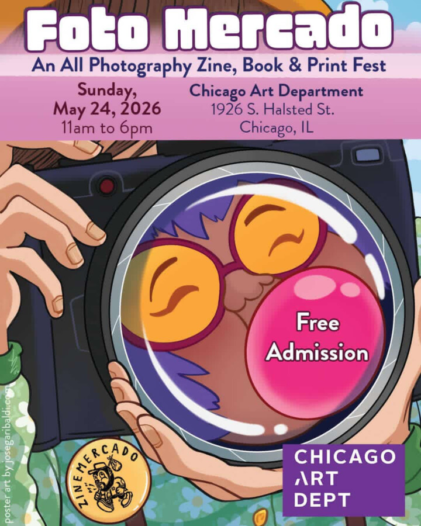

FOTOmercado
Join us for FOTOmercado – an All Photography Zine, Book & Print Fest at Chicago Art Department in Pilsen, Chicago. This 5th edition will feature work by over 30 photographers, as well as film and cameras from Central Camera Chicago and Shady Rest Vintage & Vinyl.